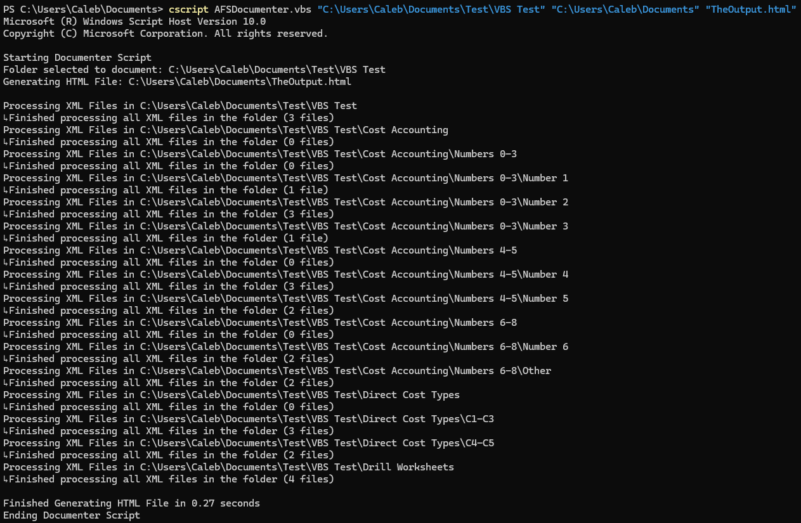
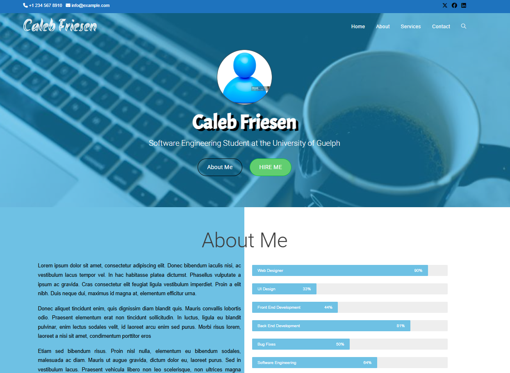
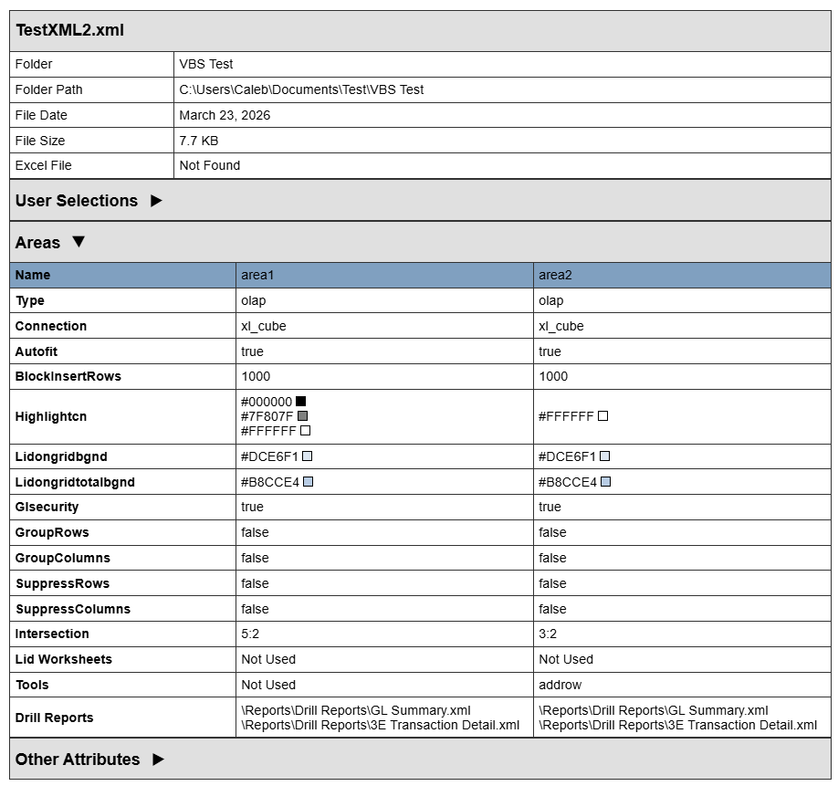

About My Employer
Over the past 4 months, I had the opportunity to work for OLAP Solutions. OLAP Solutions is a consulting company based in Toronto, and the first AFS (Advanced Financial Solutions) implementation partner, and they help clients with their challenges with forecasting and budgeting processes.
My Job
Throughout this term, I was given two main tasks. The first was developing a VBScript which outputs AFS (Advanced Financial Solutions) reports to the user. In this process, I learned how to use VBScript and how to build tables for the AFS report using HTML, written by the VBScript. The other main task was to maintain and clean up the company website, by removing inaccessible pages, adding new content, and fixing bugs. I learned how to use WordPress for this task, and even creating sample websites on WordPress while I was learning how to use it. Finally, I was given other various minor tasks such as fixing Excel files, and inserting data into LastPass.
My Goals
Goal #1
The first goal was to become proficient with using VBScript so that the company can use the scripts I work on for themselves of for a client to use for AFS Documentation purposes. Throughout the term, I worked on a VBScript which outputs AFS reports to the user. When the script runs, it gives the user information about every XML file in the folder and its subfolders, as well as information about its user attributes and area attributes. All of this data is outputted in tables and is organized using dropdowns. I also allowed the user to put what folder they want the output file to go to, which folder they want to run the script on, and what to name the output file. Finally, the script gives live updates in the terminal where you run the script, telling you which folder it is running through, which file it is looking at, and how long the report took to run once it's complete. Overall, I believe that I surpassed this goal as I am very proud with what I was able to develop, and I think that I now understand this scripting language very well, after having no experience with it in the past.
On the right, is the terminal output that the script generates while it is running, when I ran the script on sample folders.

Goal #2
My second goal was to get the entire online WordPress course on Udemy, and to fix all of the bugs, as well as adding all the needed features, to the company's website so that it is accessible for clients. During this term, I became the company's webmaster as I helped maintain the website, and made it more accessible to clients. I removed the pages that contained junk and placeholder content, while also fixing bugs and cleaning up sections that would be confusing to viewers. I also went through an online WordPress course on Udemy to learn how to use it, as I had no prior experience on WordPress. In the last 4 months, I learned a lot about how to use WordPress. I learned how to use the customization feature, how to create menus and widgets, and also learned a little about making a website accessible on mobile devices, though I wasn't able to dive too deeply in that aspect. Overall, I believe that I met this goal. While I didn't quite get to finish the WordPress course, the knowledge I gained from it was really valuable, and I was able to apply it to improving the company's website, which ended up being shown at a conference. The company website can be found here.
On the right, is an image of one of the WordPress websites I created when going through the course on Udemy.

Goal #3
My third goal was to improve my self-learning skills. Throughout the term, I would have a lot of downtime when I wasn't working on the VBScript, the website, or other various tasks. When this happened, I would message the group in Slack to see if they had any tasks for me to do. I also made sure to try and learn new things. I went through the WordPress course on Udemy and experimented with different features of WordPress. I also added new features to my VBScript that weren't originally a requirement. This includes features such as the timer that keeps track of run time, and I also added a colored box beside the hex code of a color so that the user can know what the hex color code means. I believe that I met this goal. I was able to keep myself productive and I ended up learning a lot during this downtime.
On the right, is an image of the report generated by my VBScript, featuring the colored box beside the hex code that I had added.

Final Thoughts and Reflection
This co-op term with OLAP Solutions was an invaluable experience for my growth as a Software Engineering student. I've had three co-op work terms previously and those three work terms gave me the experience needed to be successful in this one, and I was able to further develop my skills over the last 4 months. I feel like I was able to learn and apply my coding skills in a work environment, and I also applied teamwork skills that I have learned in the last four years through co-op and academics. I believe that this work term helped me improve the skills necessary to be successful in future career opportunities. Thank you OLAP Solutions for allowing me to be part of your team for the last 4 months, and I am excited for future opportunities to come!
*All images on this site were used with the permission of my employer